18 de junho de 2024
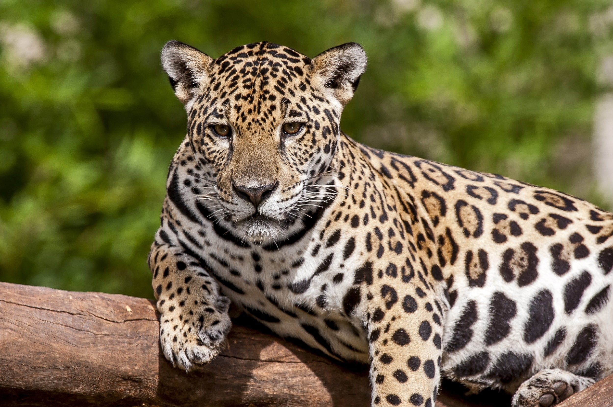A onça-pintada (Panthera onca) é o maior felino das Américas e um símbolo icônico da fauna selvagem da região amazônica. Com sua pelagem amarelada coberta por manchas pretas em forma de roseta, a onça-pintada é facilmente reconhecível e tem uma presença imponente na floresta tropical. Esses majestosos predadores habitam uma variedade de habitats, desde florestas densas até áreas abertas, e são encontrados em toda a América do Sul, do México à Argentina.
Apesar de sua reputação como um caçador furtivo e poderoso, a onça-pintada é uma espécie solitária e elusiva, preferindo evitar o contato com humanos sempre que possível. Sua dieta é diversificada e inclui uma ampla variedade de presas, desde pequenos mamíferos e aves até grandes ungulados, como veados e porcos-do-mato. Como um predador de topo, a onça-pintada desempenha um papel crucial na manutenção do equilíbrio ecológico, regulando as populações de suas presas e influenciando a estrutura das comunidades vegetais.
Infelizmente, a onça-pintada enfrenta uma série de ameaças à sua sobrevivência, incluindo a perda de habitat devido ao desmatamento, a caça ilegal e o conflito com humanos. Como resultado, a espécie é classificada como "Quase Ameaçada" pela União Internacional para a Conservação da Natureza (IUCN) e está protegida por leis em muitos países onde ocorre. Esforços de conservação, como a criação de áreas protegidas e programas de monitoramento, são essenciais para garantir a sobrevivência a longo prazo da onça-pintada e preservar sua importância como um símbolo da biodiversidade amazônica.
18 de junho de 2024
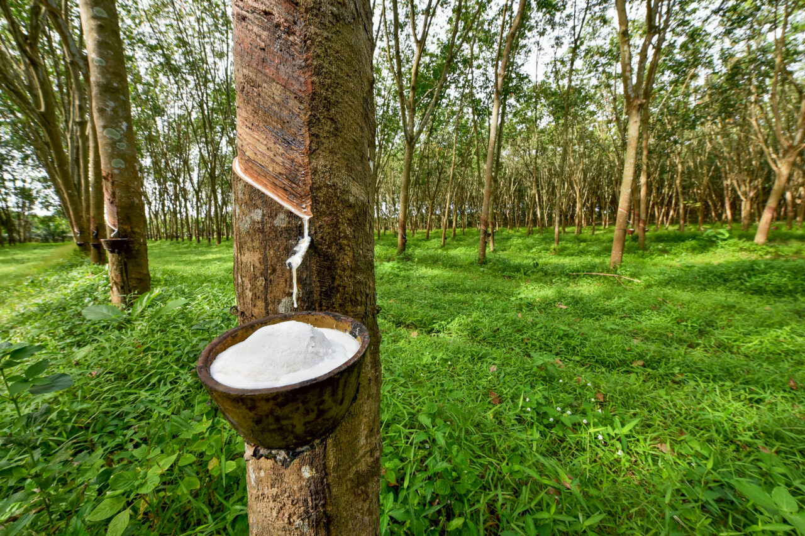A seringueira (Hevea brasiliensis) é uma árvore nativa da região amazônica conhecida por sua importância econômica e cultural. Ela é especialmente valorizada por sua produção de látex, um fluido leitoso que é coletado para a fabricação de borracha natural. A extração do látex da seringueira desempenhou um papel central na história econômica da Amazônia, impulsionando o chamado "Ciclo da Borracha" nos séculos XIX e XX, que teve um impacto significativo na economia da região.
Além de sua importância econômica, a seringueira desempenha um papel crucial na ecologia da floresta amazônica, fornecendo habitat e alimento para uma variedade de espécies de animais. Suas flores atraem polinizadores, como abelhas e borboletas, enquanto seus frutos são consumidos por aves e mamíferos. Além disso, a seringueira contribui para a regulação do clima, absorvendo dióxido de carbono da atmosfera e liberando oxigênio durante o processo de fotossíntese.
Apesar de sua importância, a seringueira enfrentou desafios significativos, incluindo a concorrência com plantações de borracha sintética e o desmatamento de suas florestas nativas. No entanto, há um renovado interesse na cultura da seringueira devido à sua contribuição para a sustentabilidade e à crescente demanda por produtos naturais e sustentáveis. Programas de manejo florestal sustentável e iniciativas de conservação estão sendo implementados para garantir a preservação da seringueira e de seu valioso papel na Amazônia.
18 de junho de 2024
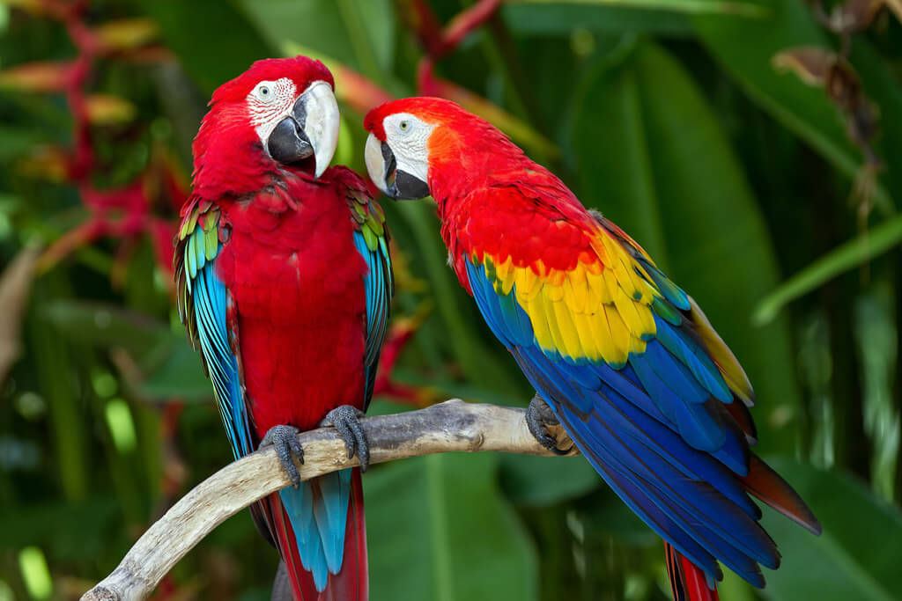A arara-vermelha (Ara chloropterus) é uma das aves mais espetaculares e reconhecíveis da região amazônica, conhecida por sua plumagem vibrante e seu comportamento social. Com sua coloração predominantemente vermelha, asas azuis e verde na parte inferior das asas e da cauda, a arara-vermelha é uma das espécies mais icônicas da fauna brasileira.
Essas aves são encontradas em toda a América do Sul, habitando principalmente as florestas tropicais úmidas, mas também são avistadas em áreas de cerrado e até mesmo em habitats semiabertos. A arara-vermelha é uma espécie social, vivendo em grupos familiares ou em bandos grandes que podem incluir dezenas de indivíduos. Esses bandos são frequentemente ouvidos antes de serem vistos, pois as araras-vermelhas são conhecidas por suas vocalizações estridentes e distintivas.
Além de sua beleza e vocalização marcante, a arara-vermelha desempenha um papel importante na dispersão de sementes e na manutenção da saúde dos ecossistemas florestais. Sua dieta inclui uma variedade de frutas, sementes e nozes, e suas atividades de forrageamento ajudam a propagar as sementes das plantas, contribuindo para a regeneração das florestas.
No entanto, a arara-vermelha enfrenta ameaças significativas à sua sobrevivência, incluindo o desmatamento, a caça ilegal e o tráfico de animais silvestres. Como resultado, a espécie está listada como "Quase Ameaçada" pela União Internacional para a Conservação da Natureza (IUCN), e esforços de conservação são necessários para proteger suas populações e garantir sua presença contínua nos ecossistemas amazônicos.
18 de junho de 2024
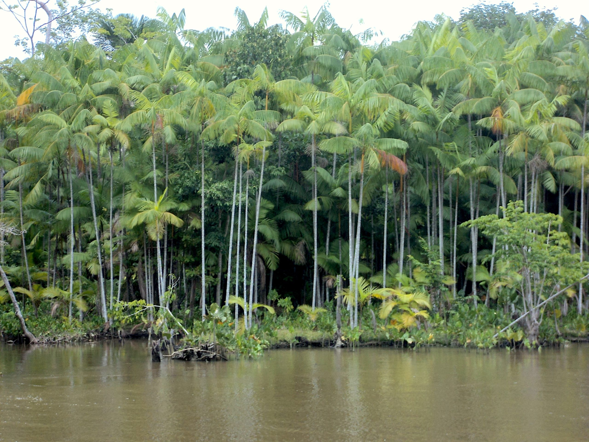O açaí (Euterpe oleracea) é uma palmeira nativa da região amazônica, conhecida por seus frutos roxos escuros que crescem em cachos nas alturas das árvores. A planta do açaí é uma espécie de palmeira de estipe único, com folhas longas e finas que se estendem do topo do tronco. Ela cresce principalmente em áreas alagadas, como várzeas e igapós, onde pode alcançar alturas consideráveis, tornando-se um componente proeminente da paisagem amazônica.
O fruto do açaí é altamente valorizado por seu valor nutricional e benefícios à saúde. Ele é rico em antioxidantes, fibras e gorduras saudáveis, tornando-se um alimento popular e amplamente consumido não apenas na Amazônia, mas também em todo o Brasil e em muitas partes do mundo. O açaí é frequentemente consumido na forma de sucos, sorvetes e, mais popularmente, como uma polpa espessa servida com frutas frescas ou granola, conhecida como "açaí na tigela".
Além de seu valor como alimento, o açaí desempenha um papel importante na ecologia da Amazônia, fornecendo alimento para uma variedade de animais, incluindo aves, morcegos e outros mamíferos. Suas flores também atraem polinizadores, como abelhas e beija-flores. No entanto, o aumento da demanda pelo fruto do açaí tem levado a preocupações sobre a sustentabilidade de sua colheita e os impactos sobre o meio ambiente e as comunidades locais. Programas de manejo sustentável e iniciativas de conservação estão sendo implementados para garantir a preservação do açaí e de seu habitat na Amazônia.
18 de junho de 2024
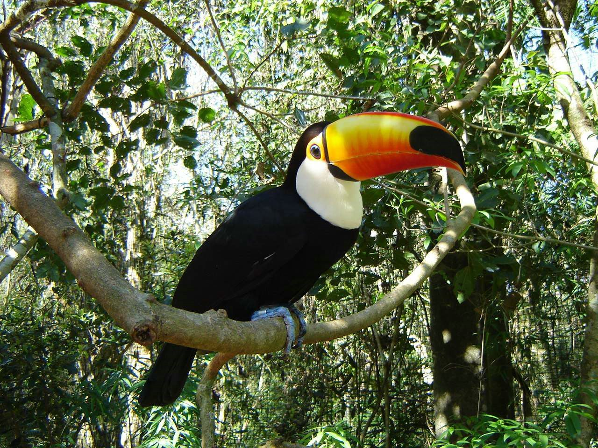O tucano-toco (Ramphastos toco) é uma das espécies mais emblemáticas da fauna amazônica, reconhecido por seu bico colorido e vibrante. Encontrado em toda a Amazônia brasileira e em outras partes da América do Sul, o tucano-toco habita florestas tropicais úmidas e cerrados, preferindo áreas arborizadas próximas a rios e córregos.
Este pássaro é conhecido por seu bico grande e colorido, que pode chegar a ser maior do que seu próprio corpo. Seu bico é amarelo com uma mancha laranja na base e uma ponta preta. Além disso, possui plumagem preta no corpo, peito amarelo e partes inferiores brancas. Sua cauda é longa e possui algumas penas vermelhas em sua base.
O tucano-toco é uma espécie onívora, se alimentando principalmente de frutas, mas também consome insetos, ovos de outras aves e pequenos vertebrados. Seu bico peculiar é uma ferramenta eficaz para pegar frutas e manipular objetos, e também desempenha um papel importante no cortejo e exibição durante a época de acasalamento.
Apesar de sua beleza e importância ecológica, o tucano-toco enfrenta ameaças devido ao desmatamento e à perda de habitat em sua área de distribuição. Esforços de conservação, como a criação de áreas protegidas e a conscientização sobre a importância da preservação da floresta amazônica, são essenciais para garantir a sobrevivência desta espécie magnífica no seu ambiente natural.
18 de junho de 2024
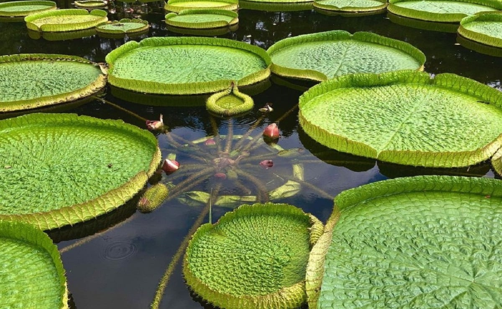A vitória-régia (Victoria amazonica) é uma planta aquática icônica da região amazônica, conhecida por suas folhas enormes e flores espetaculares. Ela cresce em ambientes aquáticos, como lagos, lagoas e rios de águas calmas e lentas, onde suas folhas flutuantes podem atingir até 2,5 metros de diâmetro, tornando-a uma das maiores plantas aquáticas do mundo.
As folhas da vitória-régia são circulares e possuem uma borda elevada, formando uma estrutura semelhante a uma bandeja. Elas são capazes de sustentar o peso de uma criança pequena e fornecem uma plataforma de descanso para uma variedade de animais, como insetos, aves e até mesmo pequenos mamíferos. À noite, as flores da vitória-régia desabrocham, exibindo pétalas brancas e delicadas que se abrem para revelar uma corola rosa e perfumada, atraindo polinizadores, como besouros e abelhas.
Além de sua beleza ornamental, a vitória-régia desempenha um papel importante no ecossistema amazônico, fornecendo habitat e alimento para uma variedade de animais aquáticos. Suas folhas fornecem sombra e abrigo para peixes, tartarugas e rãs, enquanto suas flores atraem polinizadores e contribuem para a diversidade da vida aquática. No entanto, a vitória-régia enfrenta ameaças devido ao desmatamento, à poluição e à degradação de seus habitats naturais, destacando a importância da conservação desses ecossistemas aquáticos para a sobrevivência desta planta única e fascinante.
18 de junho de 2024
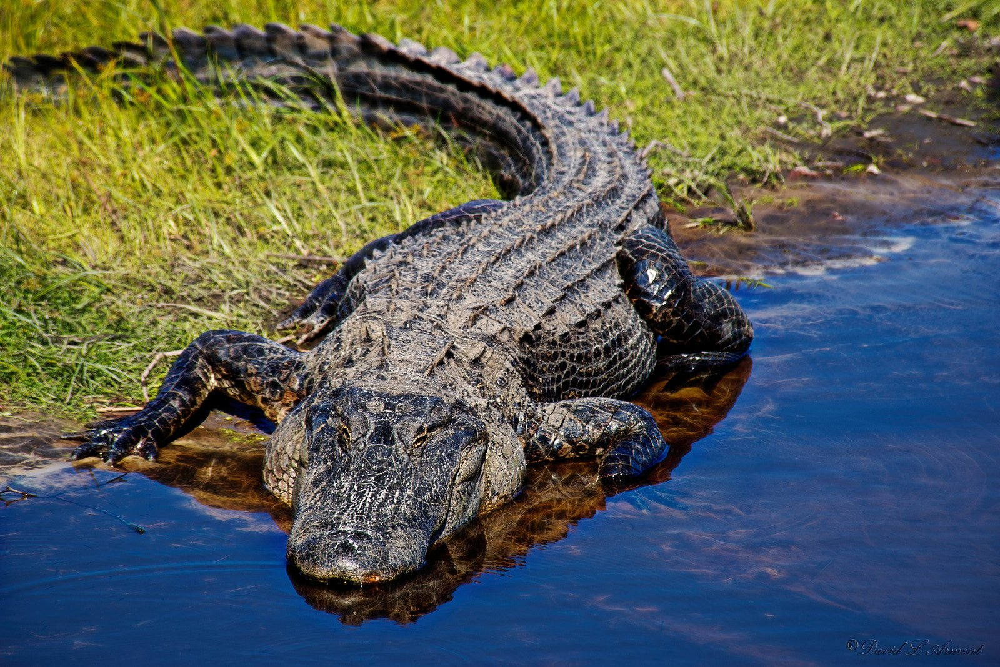O jacaré-açu (Melanosuchus niger) é um dos maiores répteis da América do Sul e um predador de topo na região amazônica. Também conhecido como jacaré-negro, ele habita principalmente as áreas alagadas da Amazônia, como rios, lagos e pântanos, onde é encontrado em toda a bacia amazônica e em algumas áreas adjacentes.
Este réptil é caracterizado por sua coloração escura, com uma pele quase preta que proporciona camuflagem em ambientes aquáticos. Seu corpo é robusto e sua cabeça é larga, com mandíbulas fortes e dentes afiados, tornando-o um predador eficiente de peixes, aves e mamíferos que se aproximam da água para se alimentar ou beber.
O jacaré-açu desempenha um papel importante no ecossistema amazônico, controlando as populações de suas presas e contribuindo para a saúde dos ecossistemas aquáticos. No entanto, como outros crocodilianos, o jacaré-açu enfrenta ameaças devido à perda de habitat, caça ilegal e conflitos com humanos. Esforços de conservação, como a criação de áreas protegidas e programas de monitoramento de populações, são essenciais para garantir a sobrevivência desta espécie magnífica e o equilíbrio dos ecossistemas amazônicos.
18 de junho de 2024
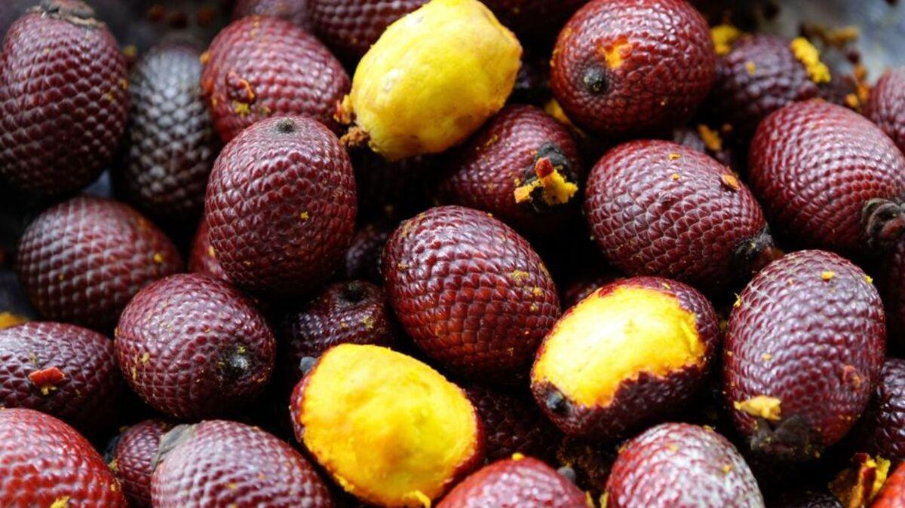O buriti (Mauritia flexuosa) é uma palmeira nativa da região amazônica e uma das árvores mais emblemáticas da paisagem tropical úmida. Esta planta é conhecida por sua estatura impressionante, crescendo até 30 metros de altura, com um tronco fino e uma copa densa de folhas verdes e plumosas.
O fruto do buriti é uma esfera avermelhada ou alaranjada, coberta por uma casca fina e lisa, e contém uma polpa amarela ou alaranjada comestível e rica em nutrientes. Esta polpa é altamente valorizada na região amazônica devido ao seu alto teor de vitamina A e outros nutrientes essenciais, sendo consumida fresca, em sucos, sorvetes e doces, e também utilizada na produção de óleo vegetal.
Além de seu valor nutricional, o buriti desempenha um papel importante na ecologia da floresta amazônica, fornecendo alimento para uma variedade de animais, incluindo aves, morcegos e macacos. Suas folhas são utilizadas na fabricação de artesanatos, cestarias e coberturas de telhado, e sua madeira é usada na construção de habitações locais.
No entanto, o buriti enfrenta ameaças devido à perda de habitat, ao desmatamento e à exploração não sustentável de seus recursos. Programas de manejo florestal sustentável e iniciativas de conservação são essenciais para garantir a preservação do buriti e de seu habitat na Amazônia, bem como o bem-estar das comunidades que dependem de seus recursos.
18 de junho de 2024
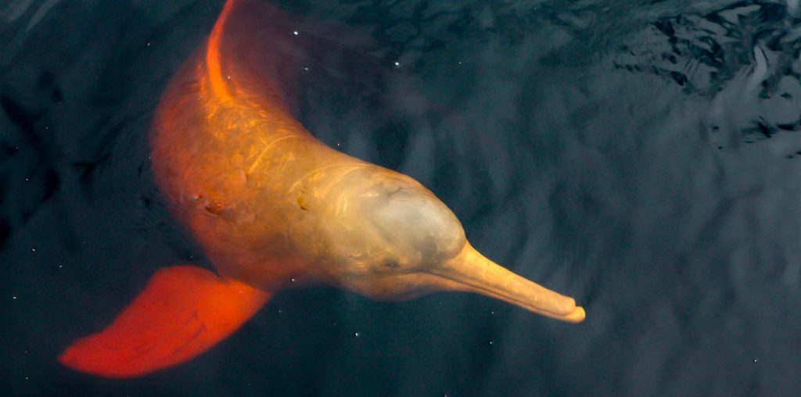O boto-cor-de-rosa (Inia geoffrensis), também conhecido como boto-vermelho ou boto-rosa, é um dos mamíferos mais emblemáticos da região amazônica. Ele é conhecido por sua coloração rosa distintiva, que é mais pronunciada nos machos adultos, enquanto as fêmeas e os jovens tendem a ter uma coloração mais acinzentada.
Este cetáceo de água doce habita os rios da bacia amazônica e é encontrado em países como Brasil, Peru, Colômbia e Venezuela. Ele é conhecido por sua natureza dócil e brincalhona, muitas vezes sendo avistado saltando e nadando ao lado de embarcações e interagindo com os moradores locais.
O boto-cor-de-rosa desempenha um papel importante no ecossistema aquático da Amazônia, ajudando a controlar as populações de peixes e contribuindo para a saúde dos rios e lagos. Ele se alimenta principalmente de peixes, mas também consome crustáceos e moluscos encontrados em seu ambiente.
Apesar de sua importância ecológica e cultural, o boto-cor-de-rosa enfrenta ameaças devido à poluição, pesca predatória e destruição de seu habitat. Esforços de conservação, como a criação de áreas protegidas e o monitoramento de populações, são essenciais para garantir a sobrevivência desta espécie única e o equilíbrio dos ecossistemas aquáticos da Amazônia.
18 de junho de 2024
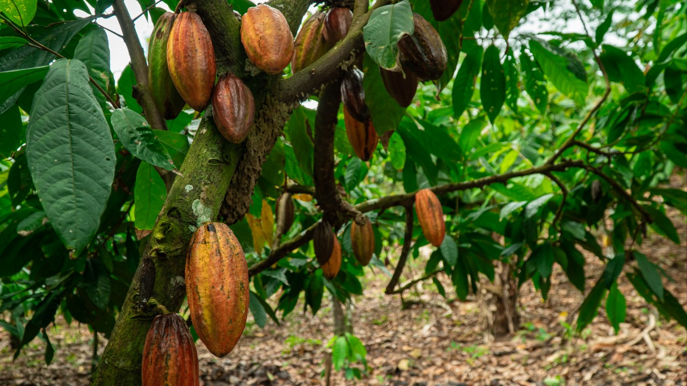O cacaueiro (Theobroma cacao) é uma planta nativa da região amazônica e uma das culturas mais importantes economicamente na região. Ela é cultivada principalmente em áreas tropicais ao redor do mundo, incluindo países da América do Sul, África e Ásia.
O fruto do cacaueiro, conhecido como cacau ou cacau-do-brasil, é uma cápsula grande e oval que contém sementes envoltas em uma polpa branca e adocicada. Essas sementes são as sementes de cacau, que são colhidas, fermentadas, secas e processadas para produzir o que conhecemos como chocolate. O cacau é amplamente utilizado na fabricação de uma variedade de produtos alimentícios, incluindo chocolate em barra, cacau em pó, bebidas de cacau e outros produtos confeitados.
Além de seu valor comercial, o cacaueiro desempenha um papel importante na agrofloresta da Amazônia, fornecendo sombra e abrigo para outras culturas, como café, banana e frutas cítricas. Ele também contribui para a preservação da biodiversidade, fornecendo habitat para uma variedade de espécies de aves, insetos e outros animais.
No entanto, o cultivo do cacaueiro enfrenta desafios, incluindo doenças, pragas e mudanças climáticas. Programas de manejo sustentável, técnicas de cultivo orgânico e iniciativas de certificação estão sendo implementados para garantir a produção sustentável de cacau e proteger os ecossistemas onde ele é cultivado.
18 de junho de 2024
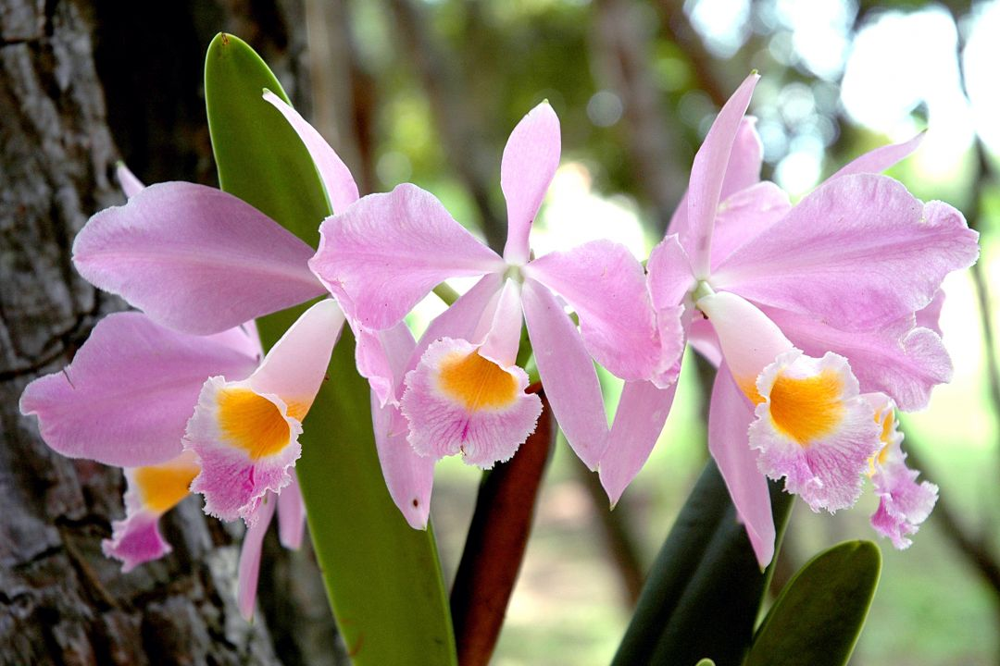A orquídea amazônica é uma das muitas variedades de orquídeas encontradas na região amazônica, conhecida por sua beleza e diversidade. Esta espécie específica pode se referir a diversas orquídeas que são nativas da Amazônia, cada uma com suas características únicas de flores, folhagens e habitats.
As orquídeas amazônicas são frequentemente encontradas em uma variedade de ambientes, desde florestas tropicais úmidas até áreas mais abertas, como margens de rios e afluentes. Elas são apreciadas por suas flores exóticas e coloridas, que variam em tamanho, forma e cor, e muitas vezes têm uma fragrância distinta.
Além de sua beleza ornamental, as orquídeas desempenham um papel importante nos ecossistemas amazônicos, fornecendo habitat e alimento para uma variedade de animais, incluindo insetos, aves e mamíferos. Suas raízes aéreas e folhagens também contribuem para a estrutura e a saúde das florestas tropicais, ajudando na retenção de umidade e na ciclagem de nutrientes.
No entanto, muitas espécies de orquídeas, incluindo as encontradas na Amazônia, estão ameaçadas devido à destruição de seus habitats naturais, coleta ilegal e mudanças climáticas. Esforços de conservação, como a criação de áreas protegidas e o cultivo sustentável, são essenciais para garantir a preservação dessas belas e importantes plantas na região amazônica.
18 de junho de 2024
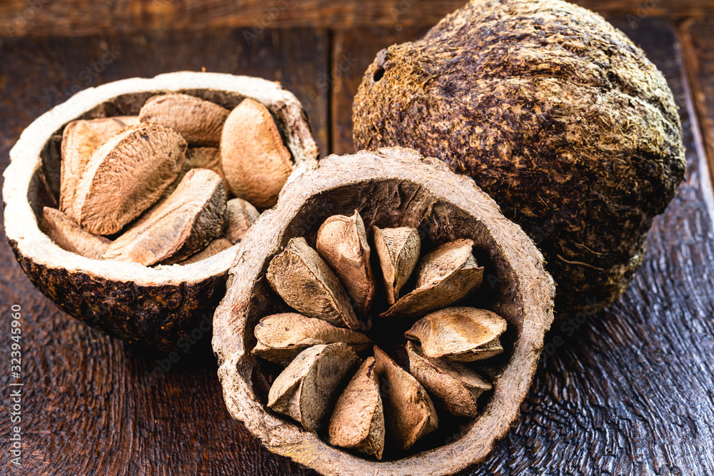A castanha-do-pará, também conhecida como castanha-do-Brasil, é uma semente de grande importância na dieta e cultura brasileira. Originária da região amazônica, essa castanha tem sido consumida há séculos pelos povos indígenas da região, tanto por seu sabor característico quanto pelos benefícios nutricionais que oferece. Rica em selênio, um mineral com poderosa ação antioxidante, a castanha-do-pará desempenha um papel importante na proteção das células contra danos causados pelos radicais livres, contribuindo assim para a saúde celular e o funcionamento adequado do sistema imunológico.
Além do selênio, as castanhas-do-pará são uma fonte significativa de outros nutrientes essenciais, como magnésio, fósforo e vitaminas do complexo B. O magnésio, por exemplo, desempenha um papel fundamental na saúde dos ossos, músculos e sistema nervoso, enquanto o fósforo é importante para a saúde óssea e a produção de energia. As vitaminas do complexo B presentes nas castanhas são importantes para o metabolismo energético e a função do sistema nervoso, entre outras funções vitais do organismo.
Além de seus benefícios nutricionais, a castanha-do-pará também é valorizada por sua versatilidade culinária. Ela pode ser consumida crua, torrada, picada em pedaços e adicionada a saladas, iogurtes, granolas, ou mesmo usada como ingrediente em receitas doces e salgadas. Seu sabor único e textura crocante a tornam um complemento delicioso para uma variedade de pratos e lanches. No entanto, devido ao seu alto teor calórico, é importante consumi-la com moderação, especialmente para aqueles que buscam controlar o peso.
Embora as castanhas-do-pará ofereçam uma série de benefícios à saúde, é importante ressaltar que pessoas com alergias a nozes devem evitar o consumo deste alimento, pois ela pode desencadear reações adversas. Além disso, é importante buscar castanhas frescas e de boa qualidade, armazenando-as corretamente para preservar seu sabor e nutrientes. Incorporar a castanha-do-pará de forma equilibrada em uma dieta variada e saudável pode contribuir significativamente para a promoção da saúde e do bem-estar geral.